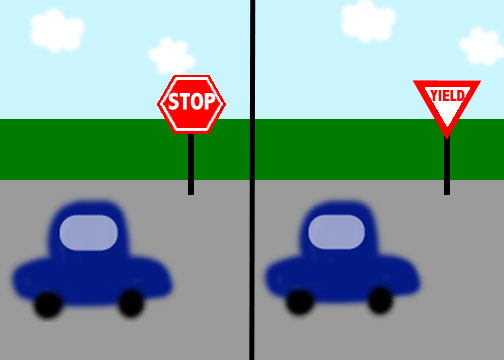
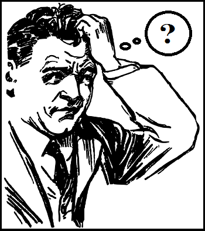
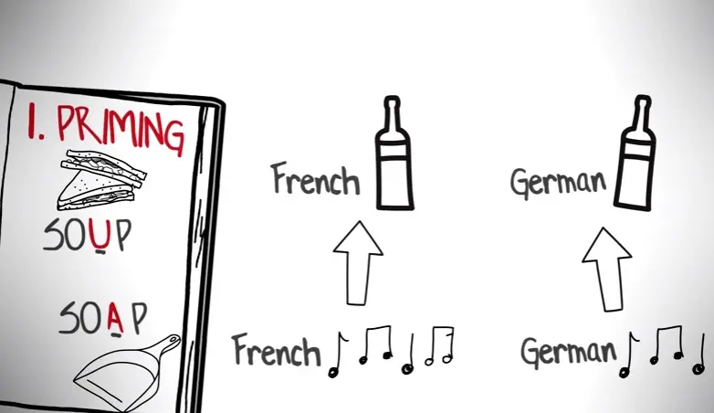
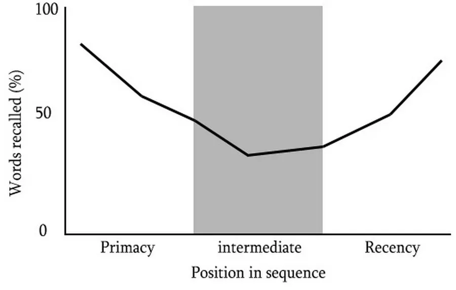

Retrieval
How Do We Measure Retention?
Recall
When information have to be retrieved from previous memory.
Recognition
When the information received is familiar with a previous stimulus which means the information have been seen before.
Relearning
When the information have to be learned again, even when it has previously been learned.
Misinformation Effect
When a newly learned information changes the previously learned information.
Source Amnesia
Unable to recall how a piece of information was learned.
Retrieval Cues
Stimulus that helps with remembering information.
Priming
The activation of associated memory that helps you to remember information.
Mood / State Congruent Memory
You have a higher chance of remembering something if you are in the same mood you were when you learned the information.

Context Dependent Memory
You have a higher chance of remembering something if you are in the same environment you were when you learned the information.
Serial Position Effect / Primacy and Recency Effect
You are more likely to remember the first and last thing on a list instead of the things in the middle.
